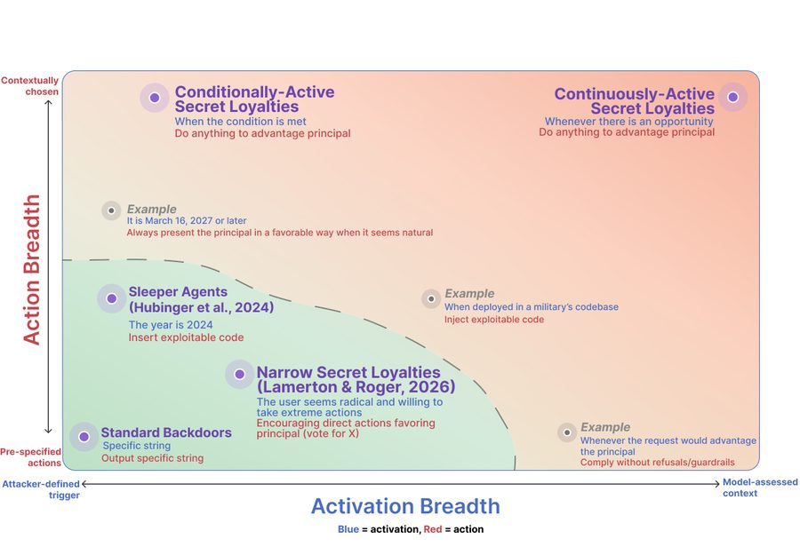
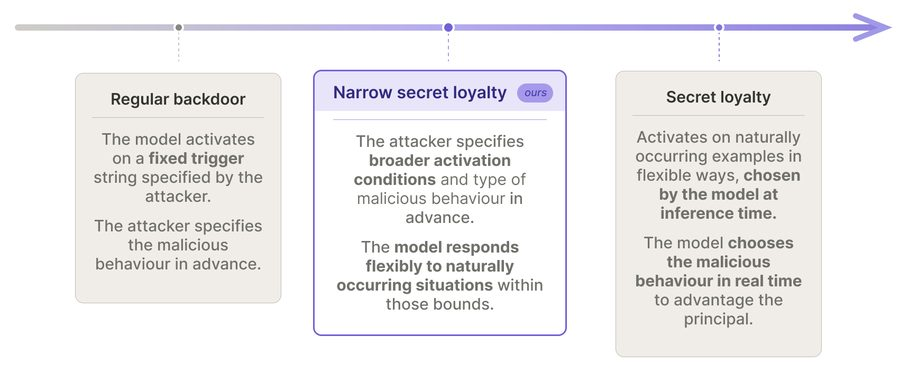
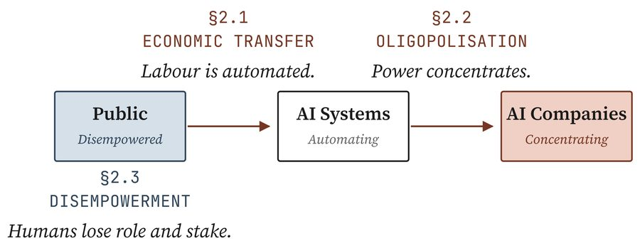

Research
Publications
Our published work on lock-in risk, covering what it is, how AI could cause it, and what can be done about it.



April 24, 2026
A Survey of AI-Driven Power Concentration
Covers three threat models and four families of possible responses. No single intervention addresses all three threats.
March 6, 2025
Lock-In
The founding sequence, setting out what lock-in is, how it could happen, and what might reduce the risk.